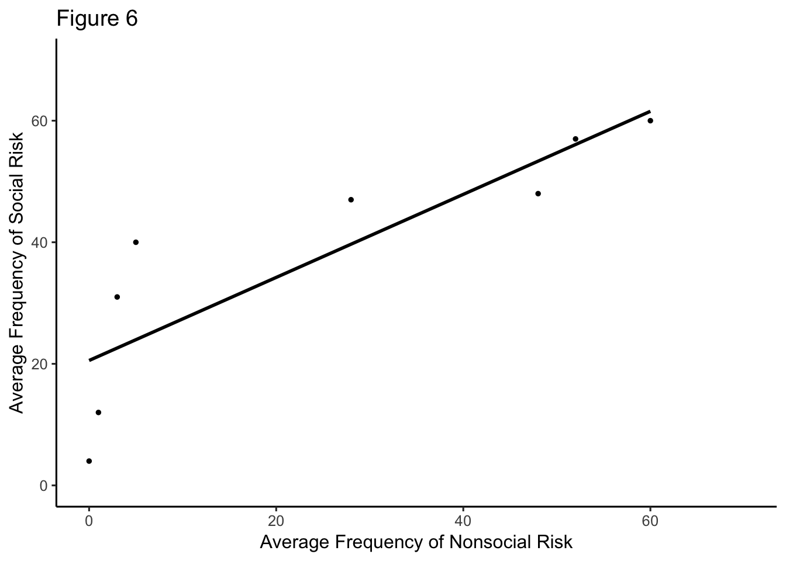
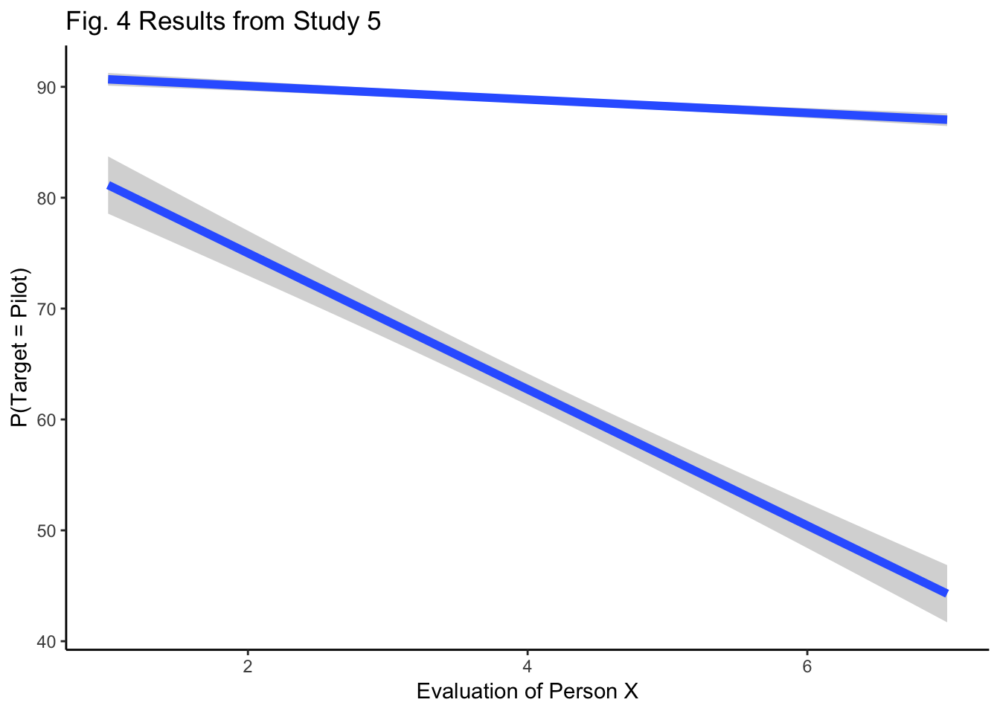

GGPlot
We will be learning how to create professional looking graphs using the package “GGPlot 2”
#Scatterplot (w best fitting regression line)
library(ggplot2)
avg_freq_nr <- c(0,1,3,5,28,48,52,60)
avg_freq_r <- c(4,12,31,40,47,48,57,60)
plot_freq_soc <- data.frame(avg_freq_r,avg_freq_nr)
ggplot(data=plot_freq_soc, aes(x=avg_freq_nr,y=avg_freq_r))+
geom_point(size=1)+
geom_smooth(method = "lm", se=FALSE, color='BLACK')+
coord_cartesian(xlim=c(0,70),ylim=c(0,70))+
xlab("Average Frequency of Nonsocial Risk")+
ylab("Average Frequency of Social Risk")+
theme_classic(base_size=12)+
ggtitle("Figure 6")
#how do you get regression line at zero & 70 to show... control the ticks?#figure 4 evaluation of person X; man & woman communicated w ATC
library(ggplot2)
evalp<- rep(c(1,2,3,4,5,6,7),2)
#man <- c(91, 90, 89, 89, 88, 88, 87)
#woman<- c(82, 74, 68, 65, 55, 50, 45)
target <- c(91, 90, 89, 89, 88, 88, 87,82, 74, 68, 65, 55, 50, 45)
person<- rep(c("Man Communicated with ATC","Woman Communicated with ATC"),times=c(7,7))
evalopX <- data.frame(evalp,target,person)
ggplot(data = evalopX, aes(x=evalp,y=target,group=person))+
geom_smooth(method=lm,size=2,show.legend = TRUE)+
xlab("Evaluation of Person X")+
ylab("P(Target = Pilot)")+
ggtitle("Fig. 4 Results from Study 5")+
theme_classic(base_size=11)
#theme(axis.ticks.x = 1:7) -- "must be a element_line object?"
#theme(axis.ticks.length = 1.00)
#why does only 1 line have the gray surrounding
#make all tics show; add negative to 1 and positive to 7 #figure 2 A.visual group B.auditory group
fac_one <- rep(rep(as.factor(c("No Transient", "Transient")),2),2)
fac_two <- rep(rep(as.factor(c("Outside","Inside")),2),2)
fac_three<- rep(as.factor(c("Visual Group", "Auditory Group")),each=4)
meanmed<- c(305,300,290,275,295,290,265,250)
er<- c(23,20,22,20,17,20,15,20)
fig2<- data.frame(fac_one,
fac_two,
fac_three,
meanmed,
er)
ggplot(data=fig2, aes(x=fac_one, y=meanmed, group=fac_three))+
geom_bar(stat="identity",position="dodge")+
facet_wrap(~fac_three)
#data not distributed right, should be 4 bars in each graph# Class example redone w additional layers
Namez<- rep(c("Dara","Azalea","Barbi","Rowena","Fiona" ),each=2)
MF <- rnorm(10,45,25)
Condition <- rep(c("Social", "Nonsocial"),5)
Aversion <- rep(c("A","N_A"),times=c(4,6))
Fig5<- data.frame(Namez,MF,Condition,Aversion)
ggplot(data=Fig5, aes(x=Condition,y=MF,group=Namez, linetype=Aversion))+ #parantheses matter,pay attention
geom_line()+
geom_text(label=Namez)+
theme_classic()+
ylab("Mean Frequency of Risky Choice")f1 <- rep(c("Emotional Stability", "Extraversion", "Openness/Intellect", "Agreeableness", "Conscientiousness"),4)
f2 <- c(-.1,-.2,.1,-.2,-.2,-.2,-.15,.2,-.5,-.2,-.2,-.02,.08,.00,-.08,.01,.25,.7,.4,.4)
f3 <- rep(c("Family","Friends","Colleagues","Strangers"),5)
meandif<-data.frame(f1,f2,f3)
ggplot(meandif, aes(x=f1,y=f2,group=f3))+
geom_line()+
ggtitle("Fig1 Mean difference in effect size")+
ylab("Mean Difference")+
scale_x_discrete(limits = c("Emotional Stability", "Extraversion", "Openness/Intellect","Agreeableness","Conscientiousness"))+
theme_classic() #theme(axis.line.x.top = 0)
#dataframe needs equal values in each variable, so how do you get y axis to have all the categories once, not repeated